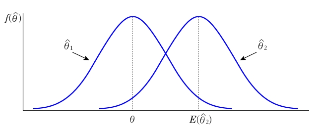
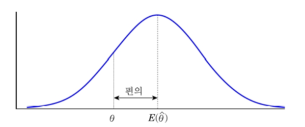
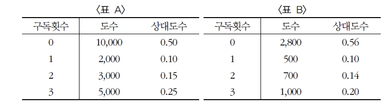
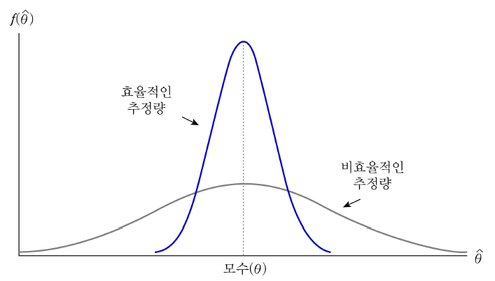
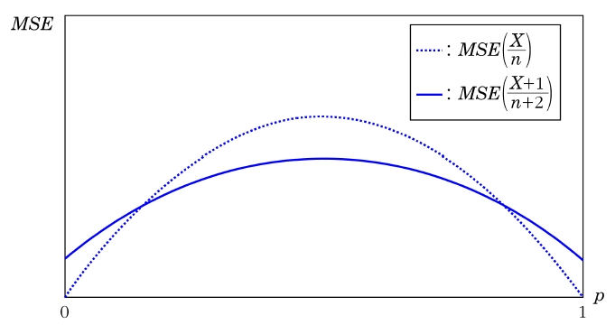
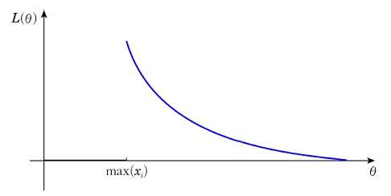

8 점추정
8.1 점추정량
통계적 추론은 모집단의 특성을 나타내는 모수(parameter)에 관한 의사결정이나 예측을 의미
특히 모수에 관한 통계적 추론은 추정(estimation)과 가설검정(hypothesis testing)으로 나누어짐
모르는 모수의 참값을 추측하기 위해 표본을 추출하여 하나의 값으로 모수를 추측하거나 모수가 속하는 범위를 추측하는데 전자를 점추정이라 하고, 후자를 구간추정이라 함
모평균 또는 모비율과 같은 우리가 관심 있는 모수에 대해 알려고 할 때 점추정의 목적은 표본을 사용하여 모수의 참값을 올바르게 추측하는데 있음
통계량 관측 가능한 확률변수의 함수를 통계량(statistic)이라 하고 통계량은 그 자신이 관측 가능한 확률변수이며 모르는 모수를 포함하지 않는다.
- 표본평균 \(\bar{X}=\frac{1}{n}\sum_{i=1}^n X_i\)는 확률변수 \(X_i\), \(i=1,\ldots, n\)들의 함수로 이루어지며 \(\bar{X}\) 자체도 확률변수임. 그리고 모르는 모수를 포함하지 않으므로 \(\bar{X}\)는 통계량이며, 마찬가지로 표본분산 \(S^2\)도 통계량 임
추정량 모수를 추정하기 위해 사용되는 통계량을 추정량(estimator)이라 하고 추정량이 관측되어 얻어진 값을 추정값(estimate)이라고 한다.
점추정량 하나의 값으로 모수를 추정하는 통계량을 점추정량(point estimator)이라 하고 점추정량으로 얻어진 값을 점추정값(point estimate)이라고 한다.
자동차 부품 회사에서 새로 개발된 범퍼가 기존의 범퍼에 비해 충격을 더 흡수한다고 한다. 이 회사에서는 새로 개발된 범퍼를 착용한 소형차 \(25\)대를 이용하여 벽에 충돌 실험을 하였다. \(X\)는 충돌 후 손상이 없는 소형차의 수라고 하고, 모수 \(p\)는 충돌 후 손상이 없는 비율이라고 하자. 만약 15대가 손상이 없었다면, 이 실험에서 추정량은 \(\hat{p}=\frac{X}{n}\)이고, 추정값은 \(\frac{x}{n}=\frac{15}{25}\)이다.
추정량은 통계량으로서 확률변수이며, 추정값은 추정량에 대한 관측된 값
일반적으로 좋은 추정량을 판단하는 기준으로 불편성, 최소분산, 일치성의 세 가지 성격이 있음. 이 세 가지 성격은 모수에 대한 추정량으로서 필수불가결한 성격은 아니지만 이러한 성격이 충족될수록 좋은 추정량이라고 판단할 수 있음
표본에서 얻는 통계량 또는 추정량은 확률변수임
8.1.1 불편성
추정량은 통계량이므로 반복해서 측정할 경우 추정량도 표본분포(sampling distribution)를 가짐
추정량의 표본분포는 그 추정량이 얼마나 좋은 추정량인가에 대한 정보를 제공하며, 좋은 추정량이 갖추어야 할 첫 번째 성질로 추정량의 표본분포는 모수를 중심으로 분포해야 함
즉, 모수를 \(\theta\)라고 하고, 그에 대한 추정량을 \(\hat{\theta}\)이라고 할 때, \(\hat{\theta}\)은 표본이 바뀔 때마다 값이 바뀌며 \(\hat{\theta}\)은 표본분포를 가짐
\(\hat{\theta}\)이 \(\theta\)를 중심으로 분포되어 있다면 그것의 기대값은 모수 \(\theta\)가 될 것이며, 이와 같이 추정량 \(\hat{\theta}\)의 기대값이 \(\theta\)가 될 때 \(\hat{\theta}\)을 모수 \(\theta\)에 대한 불편추정량(unbiased estimator)이라고 함
추정량 \(\hat{\theta}\)이 다음을 만족할 때 \(\hat{\theta}\)은 모수 \(\theta\)에 대한 불편추정량이다 \[E(\hat{\theta})=\theta\]
불편성 \(E(\hat{\theta}_1)=\theta\)

그림에서 보면 \(\hat{\theta}_1\)은 불편추정량이며, \(\hat{\theta}_2\)의 분포는 모수 \(\theta\)의 오른쪽 방향으로 이동된 분포를 가짐. 즉, \(\hat{\theta}_2\)은 \(\hat{\theta}_1\)보다 모수를 과대추정하기 쉬움
\(E(\bar{X})=\mu\)이기 때문에 표본평균 \(\bar{X}\)는 \(\mu\)에 대한 불편추정량임
모분산 \(\sigma^2\)의 추정량으로 편차제곱의 합에 자유도 \(n-1\)로 나누어 주는 이유는 자유도로 나누면 \(S^2\)은 \(\sigma^2\)에 대한 불편추정량이 되기 때문. 즉 \(E(S^2)=\sigma^2\)이 성립
표본분산 \(S^2\)이 모분산 \(\sigma^2\)의 불편추정량이 됨을 보여라.
(풀이) [방법 1] \[S^2=\frac{\sum_{i=1}^n (X_i-\bar{X})^2}{n-1}=\frac{\sum_{i=1}^n (X_i^2-2X_i\bar{X}+\bar{X}^2)}{n-1}=\frac{1}{n-1}\left[ \sum_{i=1}^nX_i^2-\frac{1}{n}\left( \sum_{i=1}^nX_i\right) ^2 \right]\]
\[\begin{aligned} E(S^2)&=\frac{1}{n-1}\left[ \sum_{i=1}^nE(X_i^2)-\frac{1}{n}E\left[ \left( \sum_{i=1}^nX_i\right) ^2\right] \right] \\ &=\frac{1}{n-1}\left[ \sum_{i=1}^n (\sigma^2+\mu^2)-\frac{1}{n}\left\lbrace Var(\sum_{i=1}^n X_i)+(E(\sum_{i=1}^nX_i))^2 \right\rbrace \right] \\ &= \frac{1}{n-1}\left[ n\sigma^2+n\mu^2-\frac{1}{n}(n\sigma^2+n^2\mu^2) \right] \\ &=\frac{1}{n-1}(n\sigma^2-\sigma^2)=\sigma^2\end{aligned}\]
표본분산의 분자에 기대값을 취하면 다음과 같다. \[\begin{aligned} E\left[\sum_{i=1}^n(X_i-\bar{X})^2 \right] &=E\left[ \sum_{i=1}^n X_i^2 -2\bar{X}\sum_{i=1}^n X_i +n\bar{X} \right] \\ &=E\left( \sum_{i=1}^n X_i^2 - n\bar{X}^2 \right) \\ &= nE(X_i^2)-nE(\bar{X}^2) \\ &=n(\mu^2+\sigma^2)-n(\mu^2+\sigma^2/n)\\ &=(n-1)\sigma^2\end{aligned}\]
따라서 \(E(S^2)=\sigma^2\)이 된다.
\(X\)가 이항분포를 따르는 확률변수라고 할 때 표본비율 \(\frac{X}{n}\)가 성공할 확률 \(p\)의 불편추정량임을 보여라.
(풀이) \(X\)가 이항분포를 따르는 확률변수이므로 \(E(X)=np\)가 된다. 따라서 \[E(\frac{1}{n}X)=\frac{1}{n}E(X)=\frac{1}{n}np=p\]
가 되고 \(\frac{X}{n}\)는 \(p\)의 불편추정량이 된다.
모평균이 \(\mu\)인 모집단으로부터 \(n=4\)인 확률표본을 \(X_1, X_2, X_3, X_4\)라고 하자. 모평균 \(\mu\)의 추정량으로 다음과 같은 두 가지 추정방법을 사용하였을 때 이들이 \(\mu\)에 대한 불편추정량임을 보여라 \[\hat{\theta}_1 =\frac{X_1+X_2+X_3+X_4}{4}, \hskip10pt \hat{\theta}_2 =\frac{X_1+2X_2+3X_3+4X_4}{10}\]
(풀이) \(E(\hat{\theta}_1)=\frac{1}{4}(E(X_1)+E(X_2)+E(X_3)+E(X_4))=\mu\)
\(E(\hat{\theta}_2)=\frac{1}{10}(E(X_1)+2E(X_2)+3E(X_3)+4E(X_4))=\mu\)
따라서 \(\hat{\theta}_1\), \(\hat{\theta}_2\) 모두 \(\mu\)에 대한 불편추정량이다.
\(\hat{\theta}\)의 기대값이 \(\theta\)가 아닐 경우 추정량 \(\hat{\theta}\)을 편의추정량(biased estimator)이라고 함
편의(bias)는 추정량의 기대값과 모수와의 차이를 의미. 따라서 불편추정량은 편의가 \(0\)인 추정량
추정량 \(\hat{\theta}\)의 편의는 다음과 같다. \[bias(\hat{\theta})=E(\hat{\theta})-\theta\]
편의

\(Y\)잡지사의 지난 몇 달간 구독자 \(20,000\)명의 구독횟수가 \(<\)표 \(A\)\(>\)와 같다. 이 자료를 분실하였다는 가정하에 자료를 다시 구축하기 위해 구독자 중 \(5,000\)명을 뽑아 전화조사를 실시한 결과는 \(<\)표 \(B\)\(>\)와 같다면 다음 물음에 답하라.

a) 실제 자료의 평균과 새로 조사한 자료의 평균을 구하라.
b) \(5,000\)번의 전화조사 결과를 지난 몇 달 간의 \(20,000\)명의 실제 자료와 비교하여 어떤 결과가 나왔는가?
(풀이)
a) 실제 자료의 평균은 \[\mu=0(0.50)+1(0.10)+2(0.15)+3(0.25)=1.15\]
이고 \(5,000\)명의 전화조사 결과의 평균은 다음과 같다. \[\hat{\mu}=0(0.56)+1(0.10)+2(0.14)+3(0.20)=0.98\]
b) \(\hat{\mu}-\mu=0.98-1.15=0.17\)이므로 전화조사의 결과는 실제조사의 결과보다 \(0.17\)만큼 과소평가 되었음을 알 수 있다.
예제 8-3에서 \(p\)에 대한 추정량으로 \(\frac{X+1}{n+2}\)을 사용하였다면 이 추정량이 불편추정량인지 편의추정량인지를 보이고, 편의추정량이라면 편의를 구하라.
(풀이) \[E(\frac{X+1}{n+2})=\frac{1}{n+2}(E(X)+1)=\frac{np+1}{n+2}\ne p\]
이므로 \(\frac{X+1}{n+2}\)은 \(p\)에 대한 편의추정량이다. 편의는 다음과 같다. \[bias(\frac{X+1}{n+2})=E(\frac{X+1}{n+2})-p=\frac{np+1}{n+2}-p=\frac{1-2p}{n+2}\]
8.1.2 최소분산
좋은 추정량으로서 갖추어야 할 두 번째 성격은 표본분포의 변동이 가능한 작아야 함
두 개의 불편추정량이 있을 경우 어떤 것이 더 좋은 추정량인가의 판단은 어떤 추정량의 분산이 더 작은가로 결정 가능
\(\theta\)에 대한 두 불편추정량을 \(\hat{\theta}_1\), \(\hat{\theta}_2\)라고 할 때 \(\hat{\theta}_2\)에 대한 \(\hat{\theta}_1\)의 상대효율(relative efficiency)은 다음과 같이 정의
\(\hat{\theta}_1\), \(\hat{\theta}_2\)를 모수 \(\theta\)에 대한 불편추정량이라 할 때 \(\hat{\theta}_2\)에 대한 \(\hat{\theta}_1\)의 상대효율은 다음과 같다. \[RE( \hat{\theta}_1,\hat{\theta}_2)=\frac{Var(\hat{\theta}_2)}{Var(\hat{\theta}_1)}\]
\(\hat{\theta}_1\), \(\hat{\theta}_2\)가 불편추정량이라고 할 때 \(\hat{\theta}_2\)에 대한 \(\hat{\theta}_1\)의 효율성이 \(1\)보다 클 경우 즉 \(Var(\hat{\theta}_2)>Var(\hat{\theta}_1)\)일 경우 \(\hat{\theta}_1\)을 \(\hat{\theta}_2\)보다 더 효율적인 추정량이라고 함
효율적인 추정량과 비효율적인 추정량의 분포

8.1.3 8.1.2 최소분산
예제 8-4에서 모분산이 \(\sigma^2\)일 때 \(\hat{\theta}_1\)과 \(\hat{\theta}_2\)중 어느 것이 더 효율적인 추정량인지 보여라.
(풀이) \(\hat{\theta}_1\)과 \(\hat{\theta}_2\)는 모두 불편추정량이고 이 두 추정량의 분산과 \(\hat{\theta}_2\)에 대한 \(\hat{\theta}_1\)의 상대효율을 구하면 다음과 같다. \[Var(\hat{\theta}_1)=Var(\frac{X_1+X_2+X_3+X_4}{4})=\frac{1}{16}(\sigma^2+\sigma^2+\sigma^2+\sigma^2)=\frac{1}{4}\sigma^2\] \[Var(\hat{\theta}_2)=Var(\frac{X_1+2X_2+3X_3+4X_4}{10})=\frac{1}{100}(\sigma^2+4\sigma^2+9\sigma^2+16\sigma^2)=\frac{3}{10}\sigma^2\] \[RE(\hat{\theta}_1,\hat{\theta}_2)=\frac{Var(\hat{\theta}_2)}{Var(\hat{\theta}_1)}=\frac{3\sigma^2/10}{\sigma^2/4}=1.2\]
상대효율이 \(1\)보다 큰 \(1.2\)이므로 \(\hat{\theta}_1\)이 \(\hat{\theta}_2\)보다 \(20\%\) 더 효율적이다. 즉, \(\hat{\theta}_2\)는 우리가 \(20\%\) 더 많은 표본을 추출한다면 \(\hat{\theta}_1\)의 정확도와 같아질 것이다. 확률표본은 추출된 확률이 동일해야 하므로 동일한 가중치를 주는 표본평균이 더 효율적이다.
평균제곱오차 모수 \(\theta\)와 모수의 추정량 \(\hat{\theta}\)와의 거리 \(|\hat{\theta}-\theta|\)를 추정오차라고 하며 \(E(|\hat{\theta}-\theta|^2)=E(\hat{\theta}-\theta)^2\)을 평균제곱오차(mean squared error; \(MSE\))라고 하며 \(MSE(\theta)\)으로 표기한다.
\(\hat{\theta}\)이 모수 \(\theta\)에 대한 추정량이라고 할 때 평균제곱오차(\(MSE\))는 다음과 같이 쓸 수 있다. \[MSE(\hat{\theta})=E(\hat{\theta}-\theta)^2=Var(\hat{\theta})+(E(\hat{\theta})-\theta)^2=Var(\hat{\theta})+bias(\hat{\theta})^2\]
- (증명) \[\begin{aligned} MSE(\hat{\theta})&=E(\hat{\theta}-\theta)^2=E((\hat{\theta}-E(\hat{\theta}))+(E(\hat{\theta})-\theta))^2\\ &=E(\hat{\theta}-E(\hat{\theta}))^2+2E((\hat{\theta}-E(\hat{\theta}))(E(\hat{\theta})-\theta))+E(E(\hat{\theta})-\theta)^2\\ &=Var(\hat{\theta})+2(E(\hat{\theta})-\theta)E(\hat{\theta}-E(\hat{\theta}))+(E(\hat{\theta})-\theta)^2\\ &=Var(\hat{\theta})+(E(\hat{\theta})-\theta)^2\end{aligned}\]
\(\hat{\theta}_1\), \(\hat{\theta}_2\)를 모수 \(\theta\)에 대한 추정량이라 할 때 \(\hat{\theta}_2\)에 대한 \(\hat{\theta}_1\)의 상대효율은 다음과 같다. \[RE( \hat{\theta}_1,\hat{\theta}_2)=\frac{MSE(\hat{\theta}_2)}{MSE(\hat{\theta}_1)}\]
예제 8-3과 예제 8-6에서 \(p\)에 대한 추정량 \(\frac{X}{n}\)와 \(\frac{X+1}{n+2}\)의 \(MSE\)를 구하고 효율을 비교하라.
(풀이) \[Var\left( \frac{X}{n}\right) =\frac{1}{n^2}Var(X)=\frac{1}{n^2}np(1-p)=\frac{p(1-p)}{n}\] \[Var\left( \frac{X+1}{n+2}\right) =\frac{1}{(n+2)^2}Var(X+1)=\frac{1}{(n+2)^2}np(1-p)=\frac{np(1-p)}{(n+2)^2}\]
각각의 편의는 \(0\)과 \(\frac{1-2p}{n+2}\)이었으므로 각각의 \(MSE\)는 다음과 같다. \[MSE\left( \frac{X}{n}\right) =Var(\frac{X}{n})+bias(\frac{X}{n})^2=\frac{p(1-p)}{n}\] \[\begin{aligned} MSE\left( \frac{X+1}{n+2}\right) &=Var(\frac{X+1}{n+2})+bias(\frac{X+1}{n+2})^2=\frac{np(1-p)}{(n+2)^2}+\frac{(1-2p)^2}{(n+2)^2}\\ &=\frac{1+(n-4)p-(n-4)p^2}{(n+2)^2}\end{aligned}\]
두 추정량의 \(MSE\)는 \(n\)과 \(p\)에 의존하는 함수로 \(n\)을 고정했을 때 \(p\)가 \(0\) 또는 \(1\)에 가까울수록 \(\frac{X}{n}\)이 \(\frac{X+1}{n+2}\)보다 더 효율적이고 \(p\)가 \(0.5\)에 가까울수록 \(\frac{X+1}{n+2}\)이 \(\frac{X}{n}\)보다 더 효율적이다. 단, \(n\)이 커져감에 따라 그 차이는 줄어든다.
\(\frac{X}{n}\)와 \(\frac{X+1}{n+2}\) 두 추정량의 \(MSE\) 비교

8.1.4 일치성
일치성(consistency)이란 추정량의 분포가 표본크기를 무한히 증가시켰을 때 모수에 한없이 집결되는 것을 의미함. 즉 추정량의 분산과 편의가 \(0\)으로 접근하는 것을 뜻함
표본크기 \(n\)의 확률표본 \(X_1, \ldots, X_n\)으로부터 얻은 \(\theta\)의 추정량을 \(\hat{\theta}_n\)이라 할 때, 다음을 만족하면 \(\hat{\theta}_n\)은 \(\theta\)의 일치추정량(consistent estimator)이라 함 \[\lim\limits_{n\rightarrow\infty}P(|\hat{\theta}_n-\theta|<\epsilon)=1\]
표본크기가 커짐에 따라 편의와 분산 모두가 \(0\)에 접근하는 추정량을 평균제곱오차 일치추정량(MSE consistent estimator)이라고 함 \[\lim\limits_{n\rightarrow\infty}MSE(\hat{\theta}_n)=0\]
모수 \(\theta\)로 확률적으로 수렴하는 추정량을 모수 \(\theta\)의 일치추정량이라 한다. 또한 표본크기가 커짐에 따라 편의와 분산 모두가 \(0\)으로 접근하는 추정량을 평균제곱오차 일치추정량이라고 한다.
예를 들어 표본평균 \(\bar{X}\)는 편의가 \(0\)이고 분산이 \(\sigma^2/n\)이었음. 표본크기 \(n\)이 무한히 커질 때 표본평균의 분산은 \(0\)에 접근함
따라서 표본평균 \(\bar{X}\)는 평균제곱오차 일치추정량임
또한 대수의 약법칙에 의해 표본평균 \(\bar{X}_n\)는 모평균 \(\mu\)의 일치추정량임 \[\lim\limits_{n\rightarrow \infty}P(|\bar{X}_n - \mu |< \epsilon)=1\]
예제 8-3과 예제 8-6에서 \(p\)에 대한 추정량 \(\frac{X}{n}\)와 \(\frac{X+1}{n+2}\)이 일치추정량, 평균제곱오차 일치추정량임을 보여라.
(풀이) \(\hat{p}_1=\frac{X}{n}\), \(\hat{p}_2=\frac{X+1}{n+2}\)라 하면 두 추정량의 평균제곱오차는 다음과 같다. \[MSE(\hat{p}_1)=\frac{p(1-p)}{n}\] \[MSE(\hat{p}_2)=\frac{np(1-p)}{(n+2)^2}\]
두 추정량의 극한값은 0이 되므로 두 추정량 모두 평균제곱오차 일치추정량이다.
또한 두 추정량이 평균제곱오차 일치추정량이므로 일치추정량이다.
8.2 점추정방법
8.2.1 적률방법
바람직한 성질들을 모두 만족하는 추정량을 항상 찾을 수 있는 것은 아님
이 절에서는 일반적으로 많이 사용되어지는 추정 방법에 대해 알아보고자 함
표본크기 \(n\)의 확률표본 \(X_1, \ldots, X_n\)이 존재할 때 원점에 대한 \(r\)번째 표본적률(sample moment)은 \(M_r'\)로 표기하고 다음과 같이 정의한다. \[M_r'=\frac{1}{n}\sum_{i=1}^n X_i^r\]
특히 \(r=1\)이면 \(M_1'=\frac{1}{n}\sum_{i=1}^n X_i^1=\bar{X}\)로 표본평균이 됨
추정방법 중 적률방법은 표본적률이 모집단의 적률에 대응하는 좋은 추정값을 제공한다는 것을 기초로 하고 있음. 즉, \(M_r'\)은 \(\mu_r'\)의 좋은 추정량이 되어야 한다는 것을 의미
다음의 방정식들의 해를 각 모수의 추정량으로 선택하는 방법을 적률방법(method of moment)이라 한다. \[\mu_r'=M_r', \hskip5pt r=1, \ldots, t\] 여기서 \(t\)는 모수들의 개수이다.
표본크기 \(n\)의 확률표본 \(X_1, \ldots X_n\)이 \((\theta, 3\theta)\)의 구간을 갖는 연속형 균일분포에서 추출되었다면 적률방법을 이용하여 모수 \(\theta\)를 추정하라.
(풀이) \[\mu_1'=E(X^1)=\mu=\frac{\theta+3\theta}{2}=2\theta\] \[M_1'=\frac{1}{n}\sum_{i=1}^n X_i =\bar{X}\]
따라서 적률방법에 의해 \(\mu_1'=2\theta=\bar{X}=M_1'\)이 성립하므로 \(\hat{\theta}=\bar{X}/2\)이다.
표본크기 \(n\)의 확률표본 \(X_1, \ldots, X_n\)이 정규분포로부터 추출되었다면 적률방법을 이용하여 모수 \(\mu\)와 \(\sigma\)를 추정하라.
(풀이) 정규확률변수에서 \(\mu_1'=E(X^1)=\mu\)이고 이에 대응하는 표본적률은 \(M_1'=\bar{X}\)이므로 \[\hat{\mu}=\bar{X}\]
또한 \(\mu_2'=E(X^2)\)이고 이에 대응하는 표본적률은 \(M_2'=\frac{1}{n}\sum_{i=1}^n X_i^2\)이므로 \[\sigma^2=E(X^2)-E(X)^2=\frac{1}{n}\sum_{i=1}^n X_i^2-\bar{X}^2\]
따라서 적률방법을 이용한 표준편차의 추정량은 다음과 같다. \[\hat{\sigma}=\sqrt{\frac{1}{n}\sum_{i=1}^n X_i^2-\bar{X}^2}=\sqrt{\frac{1}{n}\sum_{i=1}^n(X_i-\bar{X})^2}\]
표본크기 \(n\)의 확률표본 \(X_1, \ldots, X_n\)이 평균이 \(\lambda\)인 지수분포로부터 추출되었다면 적률방법을 이용하여 모수 \(\lambda\)를 추정하라.
(풀이) \(\mu_1'=E(X^1)=\mu=\frac{1}{\lambda}\)이고 이에 대응하는 표본적률은 \(M_1'=\bar{X}\)이므로 \[\hat{\lambda}=\frac{1}{\bar{X}}\]
적률방법은 자료를 조금만 변경해도 모수의 추정값들은 큰 차이가 있음
적률방법은 다른 추정방법들을 사용할 수 없는 경우에도 모수를 추정할 수 있다는 장점이 있지만 로버스트(robust)한 방법이 아니라는 결정적인 약점이 있음
8.2.2 최대우도방법
- 최대우도방법(method of maximum likelihood)은 적률방법보다 더 정교한 방법
우도함수 확률표본 \(X_1, \ldots, X_n\)의 각각에 대응되는 표본 관측값을 \(x_1,\ldots,x_n\)이라 하자. 이때 우도함수(likelihood function) \(L(\theta;x_1, \ldots, x_n)\)은 \(x_1,\ldots, x_n\)을 통해 얻어지는 결합확률밀도함수로 정의되며 모수 \(\theta\)의 함수이다. \[L(\theta;x_1, \ldots, x_n)=f(x_1,\ldots, x_n;\theta)=\prod_{i=1}^n f_{X_i}(x_i;\theta)\] \(L(\theta;x_1, \ldots, x_n)\)을 간단히 \(L(\theta)\)로 표현하기도 한다.
우도함수 우도함수 \(L(\theta;x_1, \ldots, x_n)\)을 최대화시키는 \(\theta\)의 값을 모수 \(\theta\)의 추정값으로 선택하는 방법을 최대우도방법이라 한다.
우도함수를 최대화시키는 \(\theta\)를 쉽게 구하기 위하여 일반적으로 우도함수에 자연로그를 취한 로그우도함수 \(lnL(\theta)\)를 이용함
로그우도함수를 구하고자 하는 모수로 미분하여 얻어진 미분값을 \(0\)으로 놓고 방정식의 해를 구하면 우리가 원하는 \(\theta\)의 추정량을 얻을 수 있음
최대우도방법의 특징 일반적인 정칙조건(regularity condition)하에서 다음이 성립한다.
\(\hat{\theta}\)은 \(\theta\)의 근사 불편추정량이다.
\(\hat{\theta}\)은 \(\theta\)의 일치추정량이다.
근사적으로 \(\hat{\theta}\sim N(\theta, I_{\theta}^{-1})\)이다. 여기서 \(I_{\theta}=E\left[ \left( \frac{\partial ln(\theta)}{\partial\theta} \right)^2 \right]\)
임의의 함수 \(g(\cdot)\)에 대하여 \(\eta=g(\theta)\)이면 \(\hat{\eta}=g(\hat{\theta})\)이다.
\(x_1,\ldots,x_n\)이 \(n\)번의 베르누이실험을 통해 얻어진 관측값이라 하자. 이때 성공확률인 \(p\)의 추정량을 최대우도방법을 이용하여 구하라.
(풀이) 베르누이실험에서 얻어진 관측값으로 구한 우도함수는 \[L(p;x_1,\ldots,x_n)=\prod_{i=1}^np_{X_i}(x_i;p)=\prod_{i=1}^np^{x_i}(1-p)^{1-x_i}=p^{\sum_{i=1}^nx_i}(1-p)^{n-\sum_{i=1}^nx_i}\]
로그우도함수는 \[lnL(p)=\sum_{i=1}^nx_ilnp+(n-\sum_{i=1}^nx_i)ln(1-p)\]
로그우도함수를 \(p\)에 대해 미분하면 다음과 같다. \[\frac{dlnL(p)}{dp}=\frac{1}{p}\sum_{i=1}^n x_i - \frac{1}{1-p}(n-\sum_{i=1}^n x_i)\]
로그우도함수를 미분한 식을 \(0\)의 값으로 갖는 방정식 \[\frac{1}{\hat{p}}\sum_{i=1}^n x_i-\frac{1}{1-\hat{p}}(n-\sum_{i=1}^n x_i )=0\]
을 풀면 최대우도추정량은 다음과 같다. \[\hat{p}=\frac{1}{n}\sum_{i=1}^nX_i=\bar{X}\]
표본크기 \(n\)의 확률표본 \(X_1,\ldots,X_n\)이 정규분포로부터 추출되었다면 최대우도방법을 이용하여 모수 \(\mu\)와 \(\sigma^2\)을 추정하라.
(풀이) 정규분포로부터 추출된 표본크기 \(n\)인 확률표본은 다음과 같은 확률밀도함수를 갖는다. \[L(\mu, \sigma^2)=\prod_{i=1}^n \frac{1}{\sqrt{2\pi\sigma}}exp(-\frac{1}{2\sigma^2}(x_i-\mu)^2)=(\frac{1}{2\pi\sigma^2})^{n/2}exp(-\frac{1}{2\sigma^2}\sum_{i=1}^n(x_i-\mu)^2)\]
로그우도함수는 \(lnL(\mu,\sigma^2)=-\frac{n}{2}ln2\pi -\frac{n}{2}ln\sigma^2-\frac{1}{2\sigma^2}\sum_{i=1}^n(x_i-\mu)^2\)이고 모수 \(\mu\)와 \(\sigma^2\)에 대해 각각 미분하면 다음과 같다. \[\frac{dlnL(\mu,\sigma^2)}{d\mu}=\frac{1}{\sigma^2}\sum_{i=1}^n (x_i-\mu)^2\] \[\frac{dlnL(\mu,\sigma^2)}{d\sigma^2}=-\frac{n}{2\sigma^2}+\frac{1}{2\sigma^4}\sum_{i=1}^n (x_i-\mu)^2\]
로그우도함수를 미분한 식을 \(0\)의 값으로 갖는 방정식으로 하여 \(\frac{1}{\hat{\sigma}^2}\sum_{i=1}^n (x_i-\hat{\mu})^2=0\)을 \(\hat{\mu}\)에 관해 풀면 \(\mu\)의 최대우도추정량 \[\hat{\mu}=\frac{1}{n}\sum_{i=1}^nX_i=\bar{X}\]
를 구할 수 있고 \(-\frac{n}{2\hat{\sigma}^2}+\frac{1}{2\hat{\sigma}^4}\sum_{i=1}^n (x_i-\hat{\mu})^2=0\)을 \(\hat{\sigma}^2\)에 관해 풀면 \(\sigma^2\)의 최대우도추정량 \[\hat{\sigma}^2=\frac{1}{n}\sum_{i=1}^n(X_i-\bar{X})^2\]
을 구할 수 있다.
표본크기 \(n\)의 확률표본 \(X_1,\ldots,X_n\)이 확률밀도함수가 다음과 같은 연속형 균일분포로부터 추출되었다. \[f_{X_i}(x_i)=\frac{1}{\theta},\hskip5pt 0\le x_i \le \theta, \hskip5pt i=1,\ldots, n\] 최대우도방법을 이용하여 모수 \(\theta\)를 추정하라.
(풀이) 우도함수는 \[L(\theta; x_1,\ldots,x_n)=\frac{1}{\theta^n}\prod_{i=1}^n I_{(0,\theta)}(x_i)\]
우도함수 \(L(\theta)\)는 \(\theta\)의 단조함수이고 \(0<\theta<\infty\)인 구간의 어떠한 곳에서도 \(\frac{dL(\theta)}{d\theta}\)가 \(0\)인 곳은 존재하지 않는다. 하지만 \(\theta\)가 감소함에 따라 \(L(\theta)\)가 증가하고 \(\theta\)는 집합 \(x_1,\ldots,x_n\)의 최대값보다 크거나 같아야 한다는 점을 알고 있다.
그러므로 \(L(\theta)\)를 최대로 하는 \(\theta\)의 값은 표본에서 가장 큰 관측값이다. 즉, \(\theta\)의 최대우도추정량은 다음과 같다. \[\hat{\theta}=X_{(n)}=max(X_1,\cdots,X_n)\]
우도함수
